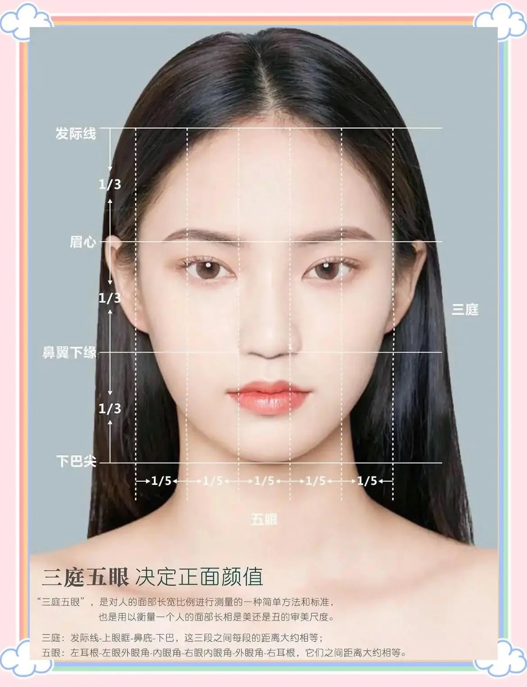

三庭五眼美学

三庭五眼美学：面部比例的黄金法则
在面部美学中，三庭五眼是一个非常重要的概念，它决定了我们正面的颜值，更是衡量一个人面部美丑的审美标准。
📏 三庭：从发际线到下巴，将面部分为三等分，每段的距离大约相等。具体来说，就是发际线到眉毛、眉毛到鼻底、鼻底到下巴这三段。理想状态下，这三段距离应该是相等的，这样会更符合美学标准。
👁️ 五眼：从左耳根到右耳根，将面部分为五等分，每段距离大约相等。具体来说，就是左耳根到左眼外眼角、左眼外眼角到内眼角、内眼角到右眼内眼角、右眼内眼角到外眼角、外眼角到右耳根这五段。理想状态下，这五段距离应该是相等的，这样也会更符合美学标准。
版权声明：内容均源于网络分享整理，如有侵权请及时联系删除。